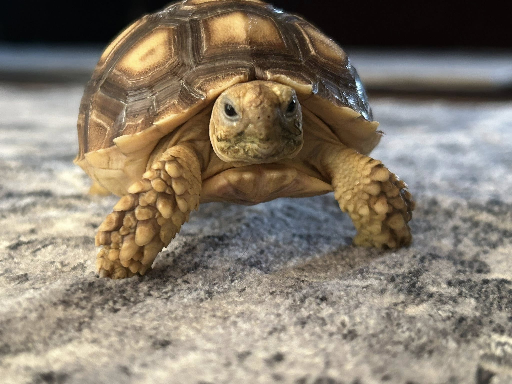

Mình là An Nhiên, mình yêu động vật và rất thích nuôi thú cưng, đặc biệt là rùa cạn.
Trang web này sẽ giới thiệu một số loại rùa và cách chăm cơ bản cho người mới bắt đầu.
Một vài loại rùa thường gặp:
| Loài rùa | Chế độ ăn | Kích thước trưởng thành | Giá dự kiến (VND) |
|---|---|---|---|
| Sulcata tortoise | Cỏ khô, rau lá | 45–60 cm | 5.000.000 – 8.000.000 |
| Leopard tortoise | Cỏ, rau xanh | 30–45 cm | 7.000.000 – 10.000.000 |
| Greek tortoise | Rau lá, một ít trái cây | 15–20 cm | 8.000.000 – 10.000.000 |
Rùa sống khá lâu nên phải chăm cẩn thận, không phải chỉ cho ăn là xong.
Một số link tham khảo thêm: